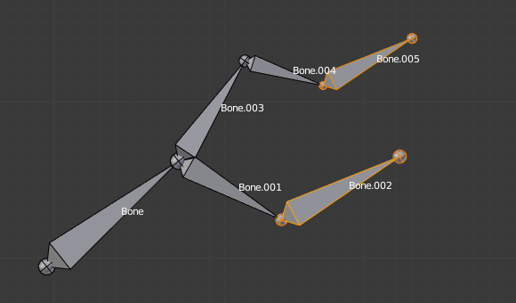

Parenting 父级¶
参考
Ctrl-P, Alt-P您可以从3D视图和属性编辑器编辑骨骼之间的关系（从而创建/修改骨骼链）。无论你喜欢什么方法，这总是一个决定的问题，对于每个骨骼，如果它必须另一个骨骼的父级，如果是，应该连接到它。
到父级 和/或链接骨骼, 你可以:
在3D视图，选择一个骨骼 然后 它将是父骨骼，然后
Ctrl-P(或 ).在弹出的小的 Make Parent（创建父级） 菜单，选择 Connected（相连项） 选项，如果你想它的子骨骼链接到它们的父骨骼，否则点击 Keep Offset(保持偏移) .如果你选择了两个或以上的骨骼，最后选择的那个是父级，如果你仅仅选择了一个已经存在的父骨骼或选择骨骼的给最后选择的父级。你仅仅选择链接它们，如果你仅仅选择的是非父骨骼，你将得到需要选择骨骼的错误消息...Note
用这种方法，新的子骨骼不会被缩放或旋转—如果选择连接父骨骼尖端，仅会平移骨骼。
在属性编辑器中，* Bones(骨骼）*选项卡，对于每个选定的骨骼， 您可以在其关系（Relations）面板的右上角 父级（Parent） 数据ID中选择其父级。如果你希望它们连接，只需启用列表右侧的复选框。
Note
用这种方法，子骨骼的尖端不会被转化—所以如果启用了*Connected（连接）*，子骨骼将会完全变换。

开始的骨架Bone.005的父级是Bone.004并链接到Bone.004. |

Bone.005重新父级到Bone.002,但它们没有连接“（在3D视图使用任一 |

Bone.005 的父级是 Bone.002并链接到Bone.002, 在3D视图使用 |

Bone.005 的父级是 Bone.002并链接到Bone.002。
使用Bone.005关系面板的父数据ID。
|
{kind=link}
取消骨骼链接或自由骨骼，你可以：
- 在3D视图，选择要取消链接的骨骼，按
Alt-P(或 ).在弹出的 清空父级（Clear Parent） 菜单，选择*清空父级Clear Parent* 清除所有的选择骨骼的关系，或如果你想要打破它们的链接选择 Disconnect Bone（断开骨骼链接）。 - 在属性编辑器中，* Bones 选项卡，对于每个选定的骨骼，您可以在“关系”面板的 *父级 数据ID中选择无父项，完全释放它。如果您只是要断开它与父级，请禁用 相连项 复选框。
注意没有选择的子骨骼关系是永远不会更改的。